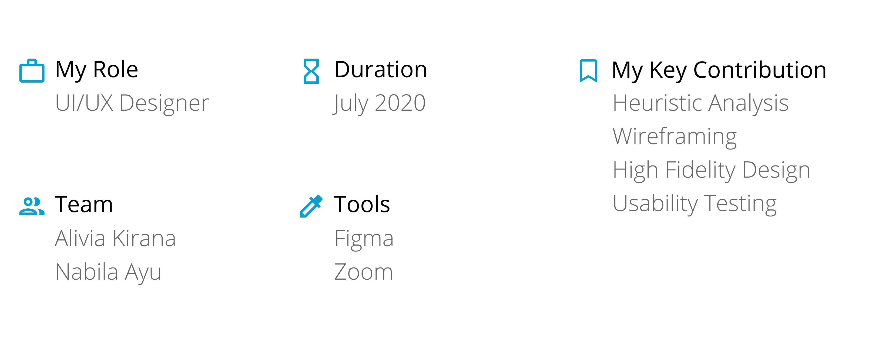
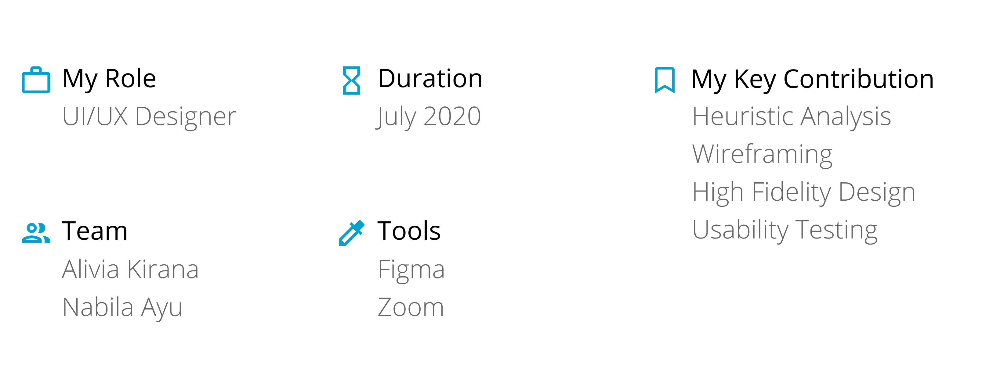

LatihID
 

Background
LatihID is a non-profit social startup aiming to provide free high quality online courses for Indonesia's SMME (Small Micro Medium Enterprises). Just recently founded in early 2020, their main objective is to build trust and engagement by bringing fresh materials to the SMME community.
What improvements should we do for the website in order to increase users' satisfaction?
Design Process
We iterate our design process based out of findings that we collected from research and user interviews.
Research
For the first step, we did a heuristic analysis to evaluate the website's performance regarding its interface. Here are some of the issues we discover:
Status not visible
There's no notification whether the users have succesfully finished their registration or not.
Idea: Build a notification for successful registrations
Inconsistencies
Various inconsistencies in design, content, and language used.
Error messages are sometimes in english, whereas the language used throughout the website is indonesian.
Idea: Revamp the error messages and website's interface so it's more standardized
Wireframing
This wireframe was built as a product of our research and also both me and my partner's personal case study. From this wireframe, we built a quick prototype for the usability testing later on.
Usability Testing
We conducted user interviews and cognitive walkthoughs with a total of 5 participants remotely using Zoom. Participants were chosen based on their similarity with LatihID's user base. Our goal was to find major key differences/pain points between the existing website and newly-made prototype.
42%
average improvement in task efficiency shown from the time it took for the participants to complete the given tasks.
11%
average improvement of System Usability Scale (SUS) score means that the participants generally feel more satisfied.
But of course, the prototype isn't without its faults. Participants feel that the previous version is more eye-catching and appealing because of the colors and general composition. This is taken into consideration for designing the final prototype.
Final Prototype
After a couple of iterations, we finally finished the final prototype.
Standardized Interface & Less Recall
We realised that a good first impression is essential for a website, therefore standardizing the interface is on the top of our list. We start by building a simple design system. From there, we also made some changes to the landing page and navbar to promote less recall.
Comprehensive Catalog
We decided switching the filter presentation to checkboxes. That way it is much more convenient and familiar for the users.
Consistent Layout
First, we changed a part of the navbar from "Artikel" to "Berita & Artikel" to better suit the content of that section. Then we modified the cards there so the result is neat and consistent.
Visible System Status
We added a signup notification and homogenize the error messages in order that a universal audience could understand.
View on Figma